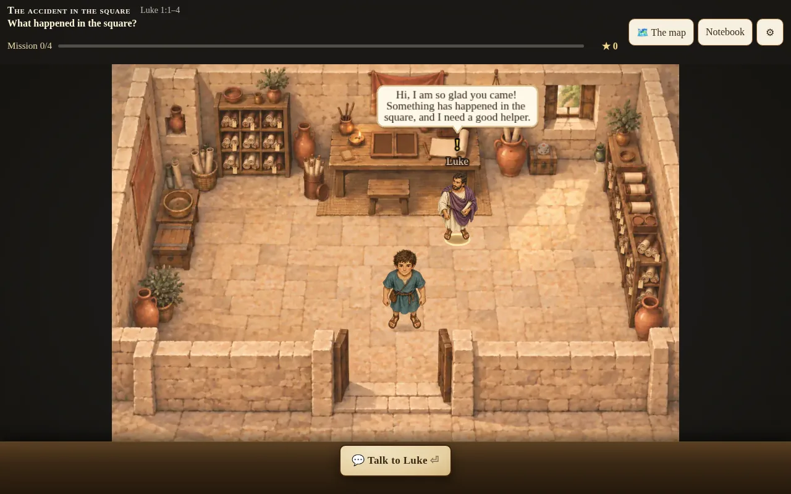
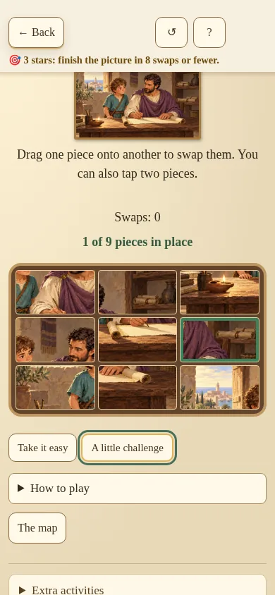
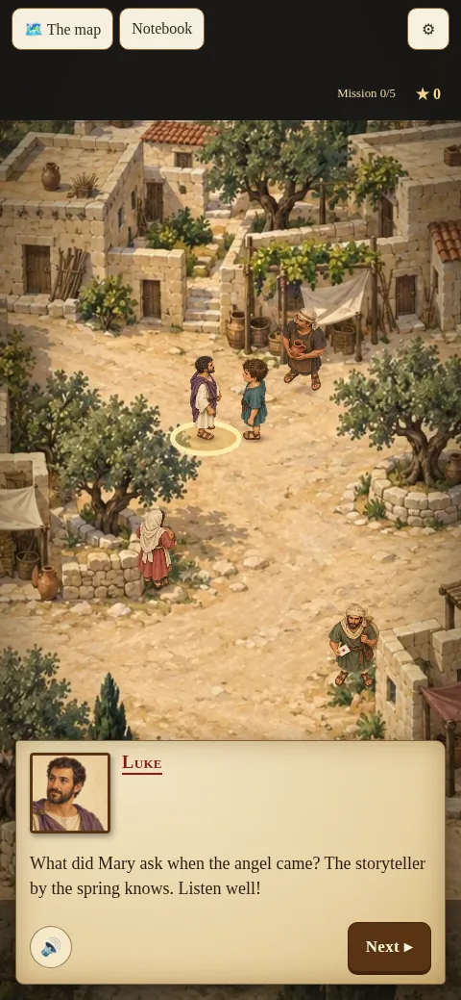
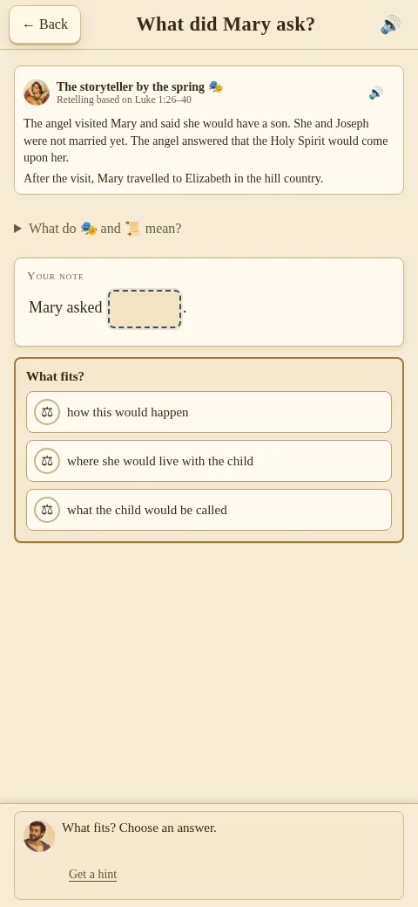
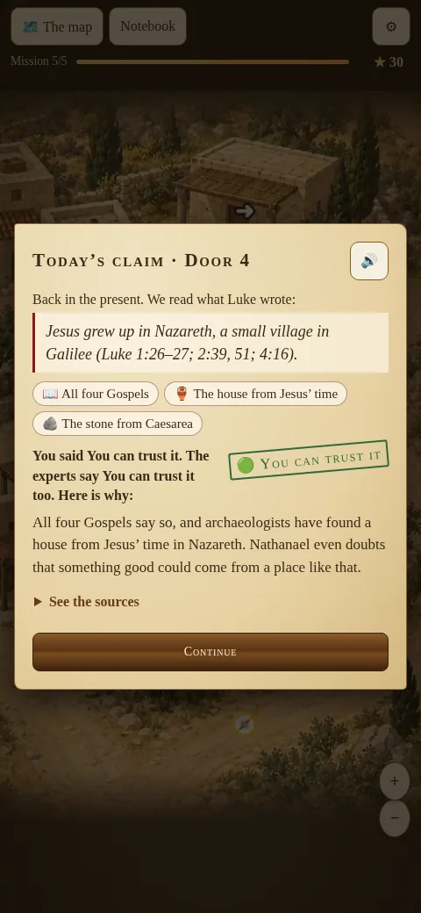
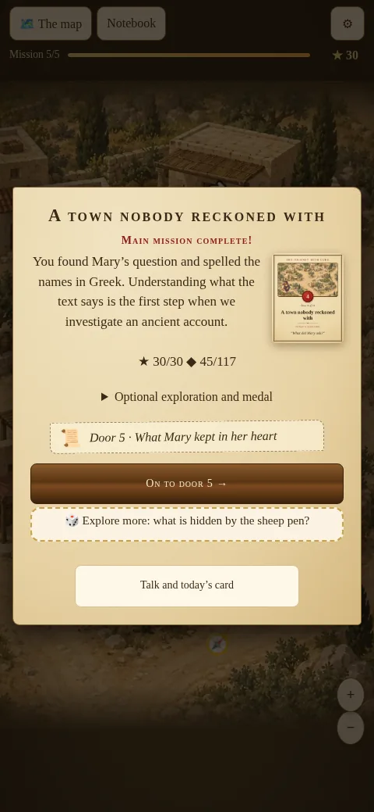

Boards to walk around
Painted places from Nazareth to Bethlehem. You walk around, talk with people and gather clues together with Luke.
The Journey with Luke
An online Advent calendar · 1–24 December
Become the apprentice of Luke the physician, walk the land where Jesus lived, talk with people who were there, and gather the stories in a witness book. Ages 8 and up. Good to play with a parent or grandparent.
Personal code: €24,99 / £19,99 / $24,99. Family code for the whole household: €49,99 / £39,99 / $49,99. A one-time purchase, no subscription.
Each door is a short case to solve. The day’s task usually takes 5–15 minutes, and anyone who wants more can stay longer.

Painted places from Nazareth to Bethlehem. You walk around, talk with people and gather clues together with Luke.

Puzzles and short tasks give pauses in the story and reward those who are paying attention.

Printable sheets for each day: hunt for words, solve codes, spot the difference and talk together about the day’s story. The English sheets are at Activities.




You pay once for the code, and then it is done. Inside the game there is no shop, no coins to buy and no offers that pop up. There is no account and no log-in, and progress is stored only on the device you play on.
A good Advent gift for a grandchild, a godchild or a neighbour. You can buy a code and give the code itself.
After the purchase we send the code to the email you give. A printable gift card, already filled in with the code, is attached to that email. Print it on both sides of the sheet (flip on the long edge) and fold it in three.
If you would rather write the code yourself, you can download a blank gift card (PDF).
Buy a codeGift cards with a personal code can also be bought in the shop Ordet è Ditt in Norway. The family code is sold only on the website.
Free
€24,99 / £19,99 / $24,99
€49,99 / £39,99 / $49,99
On this English site you pay in Stripe Checkout with a card, or with Apple Pay or Google Pay where those are offered. The purchase is sold by Stripe and shown as “Sold through Link”. Stripe sends the payment receipt. We send the code, by email and on the page after payment. You receive the code when the payment has gone through.
Prices in euro and pounds include VAT. The price in dollars does not include US sales tax, which Stripe adds where it applies. The checkout will show the amount you pay.
Customers in Norway can also buy on the Norwegian checkout.
The doors open on their day in December, and after Christmas Eve they are all open. The game stays open at least until 31 January 2027. Refunds: see the terms of sale. What we store when you buy is in the privacy policy.
Yes. Door 1 is open to everyone, with no account and no email. You can try the game before you decide.
The code unlocks doors 2–24. The doors open on their day in December, and after Christmas Eve they are all open. The game stays open at least until 31 January 2027. It is a one-time purchase: no subscription and no purchases inside the game.
A personal code (€24,99 / £19,99 / $24,99) is for one person. A family code (€49,99 / £39,99 / $49,99) is for the whole household, that is everyone who lives in the same home, and may be entered on all the devices you have at home.
Start a door and tap the cog ⚙. Open “More” and tap “I have a code”. Enter the code and tap “Unlock”. If you want the game in English, choose English under Language in the same menu first.
On this English site you pay in Stripe Checkout with a card, or with Apple Pay or Google Pay where those are offered. The purchase is shown as “Sold through Link”. Stripe sends the payment receipt. We send the code when the payment has gone through. Customers in Norway can also use the Norwegian checkout.
The game is for ages 8 and up. Younger players can take part together with an adult or an older sibling, and all the cards can be read aloud.
Yes. The game runs in the browser on a phone, a tablet and a computer, with nothing to install. A new door needs the internet the first time it is opened. After that it can be played offline on the same device. On iPhone and iPad, iOS 16.4 or later is needed.
Then the doors up to and including today’s date are open at once, and a new door opens each day through to Christmas Eve. You can catch up with the days when it suits you.
Yes, but the game has no profiles, so people who share a device also share the progress. If each player is to have their own journey, they can use their own device or browser.
See the terms of sale. When you buy on this English site, Stripe is the seller of the payment. Customers can contact Link support to request a refund. If something does not work, you can also write to us.
The game is made on a Christian foundation and takes the Bible seriously. At the same time it practises something everyone can use: asking good questions and testing what you hear. Everyone is welcome to take part.
Yes. In the game menu you can choose English. The printable activity sheets are also in English.
Email: lihai260 (at) hotmail.com
Phone: +47 951 45 892
We reply as soon as we can. Do not send a card number or BankID details by email.